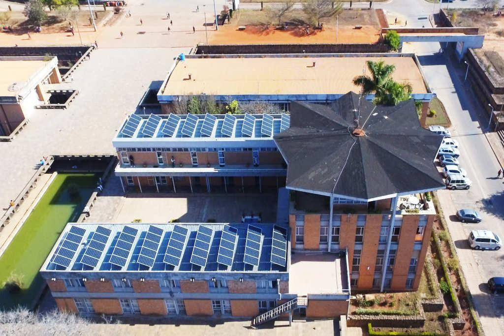
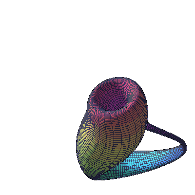

|
 |
 |
| About | Syllabus | Students | Contact |
|
Master 1: We hired between 19 students from a pool of more than 53 students
with (i) a minimum of Bachelor level in Maths and
(ii) programming skills.
Success (2023): After one year of existence, more than half of our Master students have enrolled in international programs (AIMS -- Math Structures or Machine Learning, Paris Graduate School of Maths leading to MPRI, MVA, M2MO (aka "Laure Elie"), "Maths of Randomness" OR Pure Math. Research projects: Teachers and students (2023) have agreed to work on the following topics in small groups.
|
|---|
|
Master 2: From (mid) 2024 -- 2025, we plan to implement some of the following courses (subject to availability): Algorithmic Trading, Blockchain Protocols, Deep Learning, Federated Learning, Financial Time Series, Machine Learning for Finance, Markov Chain, Reinforcement Learning, Stochastic Calculus, etc. There will be one semester of courses followed by internships of 6 months (research or corporate internships). |
|---|
|  |
(Possible) PhD: Depending on their interests and the depth of their M2 internships, some students may have
the opportunity to continue with a PhD, either locally, abroad, and/or through joint supervision.
Success (2023): We have also secured a doctoral scholarship (PhD) through International Math Union Breakout Program. |
|---|